Für Menschen, nicht nur für Zähne.
In der Zahnmedizin gibt es nicht die eine Lösung für alle. Jede Zahnsituation und jeder Mensch dahinter ist anders. Und genauso individuell planen wir auch unsere Leistungen. Von der Prophylaxe über Zahnerhalt und Zahnersatz bis hin zu funktionellen und ästhetischen Lösungen begleiten wir Sie mit Ruhe, Erfahrung und einem offenen Ohr.
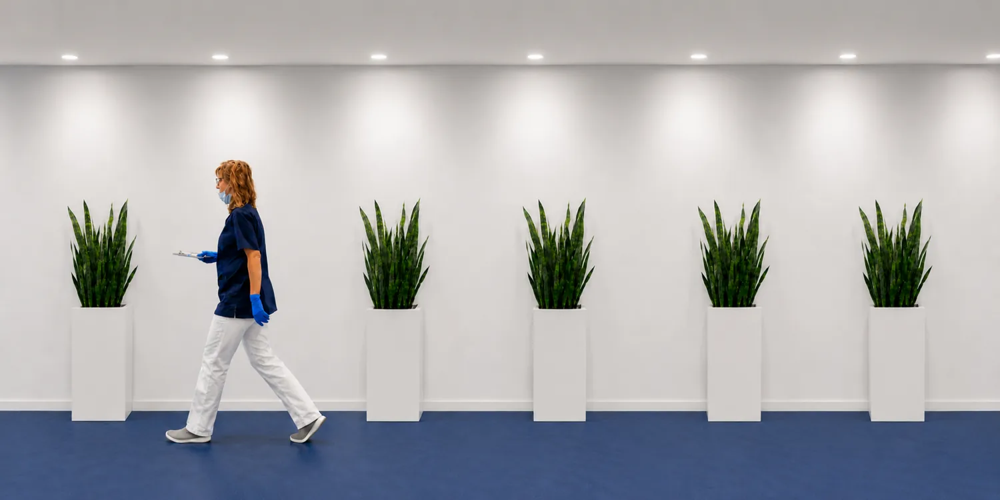
Was wir außerdem für Sie tun
Neben unseren Schwerpunkten decken wir das gesamte Spektrum der Zahnmedizin ab, von der Vorsorge bis zur umfassenden Sanierung. Fahren Sie über eine Karte, um mehr zu erfahren.
Seniorenzahnmedizin
Zahnmedizin, die sich dem Menschen anpasst, nicht umgekehrt.
Mehr erfahren →Wir nehmen uns Zeit, berücksichtigen Vorerkrankungen und Medikamente und behandeln schonend. Auch Prothesen, Haftprobleme und trockene Mundschleimhaut gehören zu unserem Alltag.
Angstpatienten
Sie müssen sich für Ihre Angst nicht rechtfertigen.
Mehr erfahren →Viele unserer Patienten kennen dieses Gefühl. Wir erklären jeden Schritt, hören zu und arbeiten in Ihrem Tempo. Sie entscheiden, wann es weitergeht, und Sie dürfen jederzeit unterbrechen.
CEREC: Zahnersatz in einer Sitzung
Ein Termin statt zwei, ohne Abdruck und Provisorium.
Mehr erfahren →Inlays, Kronen und Teilkronen aus Keramik fertigen wir digital in unserer Praxis an. Sie gehen mit dem fertigen Zahn nach Hause, in Farbe und Form auf Ihr Gebiss abgestimmt.
Implantatgetragener Zahnersatz
Chirurgie beim Spezialisten, Prothetik und Betreuung bei uns.
Mehr erfahren →Das Setzen der Implantate übernehmen erfahrene Chirurgen, mit denen wir seit Jahren zusammenarbeiten. Planung, Krone, Brücke oder Prothese darauf und die weitere Betreuung liegen in unserer Hand.
Laserbehandlung
Aphten und Herpes gezielt und nahezu schmerzfrei behandeln.
Mehr erfahren →Mit dem Diodenlaser behandeln wir Aphten und Herpesbläschen punktgenau. Die Beschwerden lassen meist deutlich schneller nach, auch entzündetes Zahnfleisch profitiert davon.
Amalgamsanierung
Alte Füllungen raus, moderne Materialien rein.
Mehr erfahren →Amalgamfüllungen tauschen wir unter Schutzmaßnahmen gegen zahnfarbene Materialien aus: Komposit, Keramik oder Gold. Wir beraten Sie in Ruhe, welche Lösung für Sie sinnvoll ist.
Komplette Zahnsanierung
Wenn vieles auf einmal ansteht, planen wir Schritt für Schritt.
Mehr erfahren →Was ist dringend, was hat Zeit, was gehört zusammen? Sie bekommen einen klaren Behandlungs- und Kostenplan, bevor wir beginnen. Und Sie bestimmen das Tempo.
Kinderzahnheilkunde
Der erste Zahnarztbesuch prägt. Wir lassen Kindern Zeit.
Mehr erfahren →Wir erklären alles in Ruhe und machen aus der Untersuchung kein Drama. Im Infoportal wartet außerdem eine eigene Kinderecke mit Quiz, Putz-Timer und Diplom.
Hightech für Ihr Lächeln
Zähne vergrößert darstellen und Veränderungen frühzeitig erkennen, so lassen sich Karies oder feine Defekte sichtbar machen und gezielt behandeln.
Entfernt weiche Beläge und Verfärbungen besonders schonend und gründlich, für glatte Zahnoberflächen und ein frisches Mundgefühl.
Digitale Abdrücke ohne klassische Abdruckmasse, mehr Komfort und eine präzise Grundlage für Zahnersatz oder Schienen.
Unterstützt die schonende Behandlung von entzündetem Gewebe, präzises Arbeiten, das Heilungsprozesse gezielt fördern kann.
Zahnersatz digital und passgenau direkt in unserer Praxis, in vielen Fällen ist die Versorgung in nur einer Sitzung möglich.
Validierte Aufbereitung, moderne Sterilisation und dokumentierte Abläufe, damit Sie sich bei jeder Behandlung rundum sicher fühlen können.
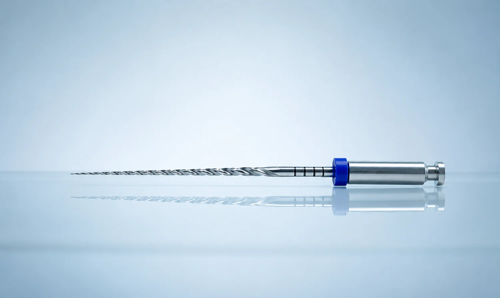
Erhalten, was am besten zu Ihnen passt!
Wenn sich ein Zahn entzündet oder starke Schmerzen verursacht, ist zahnärztliches Fingerspitzengefühl gefragt. Oft ist der schmerzfreie Zahnerhalt mit der richtigen Behandlung noch möglich. In der Endodontie schauen wir uns das Innere des Zahnes genau an. Es geht uns darum, entzündete Zahnnerven zu behandeln oder geschädigte Zähne zu erhalten und ihre Funktion langfristig zu sichern.
Bei FRYDENT, Ihrer Zahnarztpraxis in Bonndorf im Schwarzwald, ist die Endodontie ein besonderer Schwerpunkt. Wir arbeiten sorgfältig, ruhig und mit moderner Technik, um Ihre natürlichen Zähne möglichst lange zu bewahren.
Zähne retten mit moderner Endodontie
Eine erfolgreiche Wurzelbehandlung erfordert Erfahrung, eine präzise Diagnostik und viel Sorgfalt. Ziel ist es, entzündetes Gewebe aus dem Zahninneren vollständig zu entfernen, den Zahn gründlich zu reinigen und dann bakteriendicht zu verschließen. Am Ende soll Ihr Zahn schmerzfrei, entzündungsfrei und stabil sein. Rund um unsere Wurzelbehandlungen beraten wir Sie bei uns in Ruhe, transparent und persönlich.
Aufbereitet mit präziser Technik
Bei unseren Wurzelbehandlungen setzen wir auf moderne Aufbereitungstechniken, wie das maschinelle RECIPROC®-Verfahren, Laser und Ultraschall, und digitale Röntgendiagnostik, um die Behandlung exakt zu planen und umzusetzen. Wenn nötig führen wir Revisionsbehandlungen durch. So schaffen wir die Voraussetzung dafür, dass der behandelte Zahn wieder belastbar und langfristig stabil bleibt.
Mehr zur Wurzelkanalbehandlung finden Sie in unserem Infoportal. Zum Portal →Noch Fragen? Unsere Antworten zum Thema Endodontie
Welche Beschwerden könnten auf eine nötige Wurzelbehandlung hinweisen?
Typische Anzeichen können anhaltende Zahnschmerzen, Druckempfindlichkeit, Schwellungen oder eine erhöhte Schmerzreaktion auf Wärme oder Kälte sein. Manchmal verläuft eine Entzündung jedoch auch lange unbemerkt und wird erst im Röntgenbild sichtbar. Ob eine Wurzelbehandlung notwendig ist, lässt sich zuverlässig durch eine sorgfältige Untersuchung klären. Schauen Sie deshalb bei Beschwerden bei uns vorbei. Bei FRYDENT nehmen wir uns Zeit, die Situation verständlich zu erklären und gemeinsam das weitere Vorgehen zu besprechen.
Ist eine Wurzelbehandlung schmerzhaft?
Dank moderner Betäubungsverfahren ist eine Wurzelbehandlung heute in der Regel gut schmerzfrei möglich. Viele Patientinnen und Patienten empfinden die Behandlung deutlich weniger unangenehm als erwartet. Empfindlichkeiten können vor allem durch die bestehende Entzündung entstehen, nicht durch die Behandlung selbst. Wir arbeiten bei FRYDENT ruhig, schonend und passen uns Ihnen an.
Wie lange hält ein wurzelbehandelter Zahn?
Ein erfolgreich wurzelbehandelter Zahn kann viele Jahre, oft sogar ein Leben lang erhalten bleiben. Entscheidend sind eine gründliche Behandlung, eine gute Nachsorge und eine stabile Versorgung des Zahns, zum Beispiel mit einer Krone. Auch regelmäßige Kontrollen spielen eine wichtige Rolle. Ziel der Endodontie bei FRYDENT ist immer der langfristige Erhalt Ihrer natürlichen Zähne.
Wann ist eine erneute Wurzelbehandlung sinnvoll?
Eine erneute Wurzelbehandlung kann notwendig sein, wenn sich ein bereits behandelter Zahn erneut entzündet. Ursachen können verbliebene Bakterien, sehr feine Verästelungen der Wurzelkanäle oder neue Undichtigkeiten sein. Mit moderner Diagnostik lässt sich oft klären, ob der Zahn erneut behandelt und erhalten werden kann. Diese sogenannte Revisionsbehandlung gehört ebenfalls zu unserem endodontischen Leistungsspektrum.
Warum nutzen Sie moderne Technik bei der Endodontie in Bonndorf?
Moderne Technik unterstützt eine präzise und schonende Behandlung. Digitale Röntgendiagnostik hilft bei der genauen Beurteilung der Wurzeln und der Behandlungsplanung. Zeitgemäße Aufbereitungstechniken ermöglichen eine gründliche Reinigung auch komplexer Wurzelkanäle. So erhöhen wir die Erfolgsaussichten und schaffen verlässliche Voraussetzungen für den Zahnerhalt.
Gibt es Alternativen zur Wurzelbehandlung?
Wenn der Zahnnerv irreversibel geschädigt ist, ist die Wurzelbehandlung meist die einzige Möglichkeit, den Zahn zu erhalten. Alternativ bliebe in solchen Fällen häufig nur die Entfernung des Zahns. Ob es andere sinnvolle Optionen gibt, hängt immer von der individuellen Situation ab. Bei uns besprechen wir alle Möglichkeiten offen und verständlich, damit Sie eine gut informierte Entscheidung treffen können.
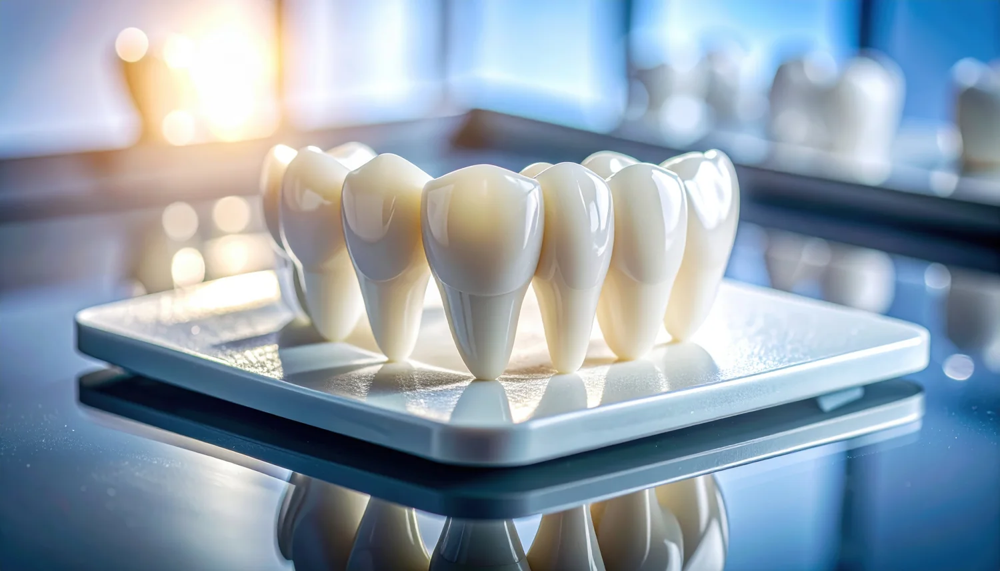
Fast wie Ihre eigenen Zähne!
Zahnersatz kommt dann ins Spiel, wenn Zähne fehlen, stark geschädigt sind oder ihre Funktion nicht mehr zuverlässig erfüllen. Ziel ist immer eine Lösung, die sich gut anfühlt, natürlich aussieht und im Alltag problemlos funktioniert.
Bei FRYDENT, Ihrer Zahnarztpraxis in Bonndorf im Schwarzwald, planen wir Zahnersatz individuell und mit viel Sorgfalt. Dabei verbinden wir moderne Technik mit handwerklicher Präzision, abgestimmt auf Ihre persönliche Situation.
Zahnersatz, bei uns immer individuell
Zahnersatz soll nicht nur funktionieren, sondern sich selbstverständlich anfühlen. Deshalb planen wir jede Versorgung individuell und mit Blick auf Ihren Alltag. Ob ein einzelner Zahn ersetzt werden muss oder eine umfassendere Versorgung notwendig ist, entscheidend sind Passgenauigkeit, Stabilität und ein natürliches Erscheinungsbild. Wir nehmen uns Zeit für die Planung, erklären die verschiedenen Möglichkeiten verständlich und finden gemeinsam die Lösung, die medizinisch sinnvoll und persönlich passend ist.
Präzise geplant, schonend eingesetzt.
Moderne Technik und hochwertige Materialien sind für uns ein Muss. Mit dem digitalen CEREC-Verfahren können wir Zahnersatz in vielen Fällen direkt in unserer Praxis präzise herstellen. Implantatgetragene Versorgungen realisieren wir in enger Zusammenarbeit mit Dr. Dorow in der Klinik Dogern, wo der chirurgische Teil erfolgt. Die anschließende prothetische Versorgung übernehmen wir bei FRYDENT, sodass Sie auch hier eine verlässliche Betreuung aus einer Hand erhalten. Ergänzend kommen hochwertige Compositfüllungen zum Einsatz, um Zähne funktionell und ästhetisch zu stabilisieren.
Mehr zu Kronen & Brücken finden Sie in unserem Infoportal. Zum Portal →Noch Fragen? Unsere Antworten zum Thema Zahnersatz & Prothetik
Wann ist Zahnersatz notwendig?
Zahnersatz wird erforderlich, wenn Zähne fehlen, stark beschädigt sind oder ihre Stabilität verloren haben. Auch nach einer Wurzelbehandlung kann eine Versorgung sinnvoll sein, um den Zahn langfristig zu schützen. Ziel ist es, Kaufunktion, Sprachfähigkeit und Ästhetik wiederherzustellen. Welche Lösung geeignet ist, klären wir individuell im Gespräch und bei der Untersuchung.
Welche Arten von Zahnersatz gibt es?
Je nach Situation kommen Kronen, Brücken, Teil- oder Vollprothesen infrage. Zusätzlich gibt es implantatgetragene Versorgungen, die besonders stabil und langlebig sein können. Welche Variante sinnvoll ist, hängt von der Zahnsituation, dem Knochenangebot und Ihren persönlichen Anforderungen ab. Bei FRYDENT erklären wir die Unterschiede verständlich und transparent.
Was ist CEREC und welche Vorteile bietet es?
CEREC ist ein digitales Verfahren zur Herstellung von Zahnersatz direkt in der Praxis. Mit moderner Technik können Kronen oder Inlays präzise geplant und häufig in nur einer Sitzung gefertigt werden. Das spart Zeit und ermöglicht eine sehr passgenaue Versorgung. Ob CEREC für Sie geeignet ist, prüfen wir individuell.
Wie läuft eine implantatgetragene Versorgung ab?
Bei implantatgetragenem Zahnersatz wird zunächst das Implantat chirurgisch eingesetzt. Dieser Schritt erfolgt in enger Kooperation mit Dr. Dorow in der Klinik Dogern. Nach der Einheilphase übernehmen wir die prothetische Versorgung in unserer Praxis. So stellen wir sicher, dass Implantat und Zahnersatz optimal aufeinander abgestimmt sind.
Sind Compositfüllungen auch Zahnersatz?
Compositfüllungen zählen zum zahnfarbenen Zahnersatz bei kleineren Defekten. Sie eignen sich besonders, um beschädigte Zähne ästhetisch und funktionell zu stabilisieren. Moderne Compositmaterialien sind belastbar und fügen sich unauffällig in das natürliche Zahnbild ein. Welche Lösung sinnvoll ist, hängt vom Umfang des Defekts ab.
Wie lange hält Zahnersatz?
Die Haltbarkeit von Zahnersatz hängt von mehreren Faktoren ab, etwa von Material, Verarbeitung, Mundhygiene und regelmäßiger Kontrolle. Hochwertig gefertigter Zahnersatz kann viele Jahre zuverlässig funktionieren. Regelmäßige Prophylaxe und Kontrolltermine tragen wesentlich zur Langlebigkeit bei. Bei FRYDENT begleiten wir Sie auch nach der Versorgung langfristig.
Ihr eigener Zahn bleibt das Beste.
Ein Zahn, der erhalten werden kann, ist jedem Ersatz überlegen. Deshalb prüfen wir bei jeder Füllung zuerst, wie viel gesunde Zahnsubstanz sich bewahren lässt. Erst danach entscheiden wir gemeinsam mit Ihnen über das Material.
Komposit: die zahnfarbene Lösung für den Alltag
Komposit ist ein zahnfarbener Kunststoff, der direkt im Behandlungsstuhl eingebracht und in Schichten gehärtet wird. Der Vorteil: Die Behandlung ist in einer Sitzung abgeschlossen, und es muss nur wenig Zahnsubstanz entfernt werden. Für kleine bis mittlere Defekte ist Komposit unsere Standardlösung. Bei großen Defekten und starker Kaubelastung stößt das Material allerdings an seine Grenzen.
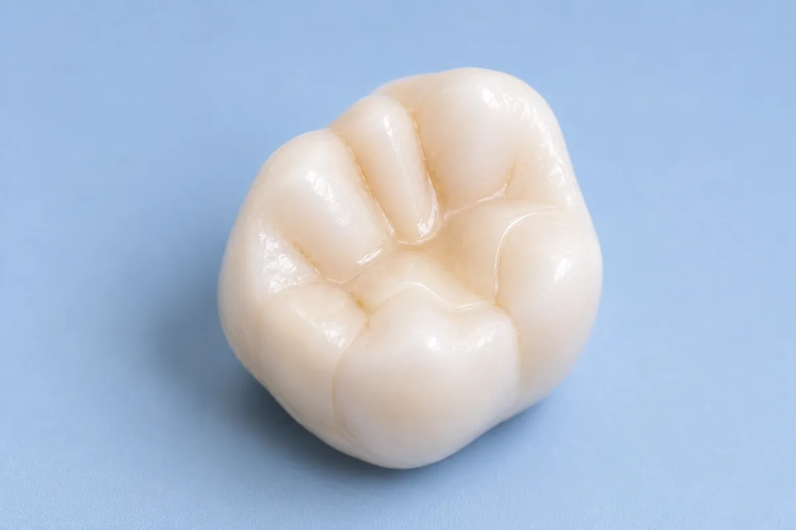
Komposit. Zahnfarbener Kunststoff, direkt im Behandlungsstuhl eingebracht und in Schichten gehärtet. Illustration, keine Patientenaufnahme.
Keramik-Inlays mit CEREC: passgenau aus einem Stück
Bei größeren Defekten fertigen wir Inlays und Onlays aus Keramik. Mit CEREC entsteht die Restauration digital in unserer Praxis, sodass in vielen Fällen keine zweite Sitzung und kein Provisorium nötig sind. Keramik ist farblich kaum von der eigenen Zahnsubstanz zu unterscheiden, sehr stabil und gut verträglich. Sie ist etwas aufwendiger als eine Füllung, dafür aber deutlich belastbarer.
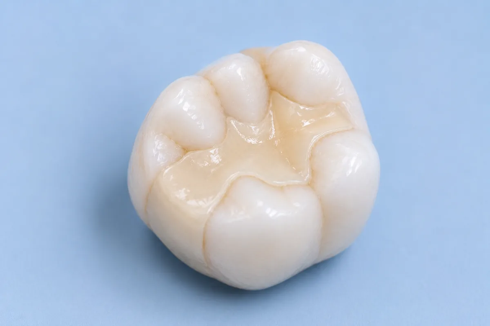
Keramik. Inlay aus Keramik, mit CEREC digital gefertigt, farblich kaum vom eigenen Zahn zu unterscheiden. Illustration, keine Patientenaufnahme.
Gold: unauffällig gut, wo es darauf ankommt
Gold wirkt altmodisch, ist es aber nicht. In bestimmten Situationen, etwa bei starkem Knirschen oder sehr engen Platzverhältnissen im Seitenzahnbereich, hält eine Goldrestauration länger und randdichter als Keramik. Sichtbar ist sie im hinteren Bereich kaum. Wir schlagen Gold dort vor, wo es fachlich die bessere Wahl ist, nicht als Standard.
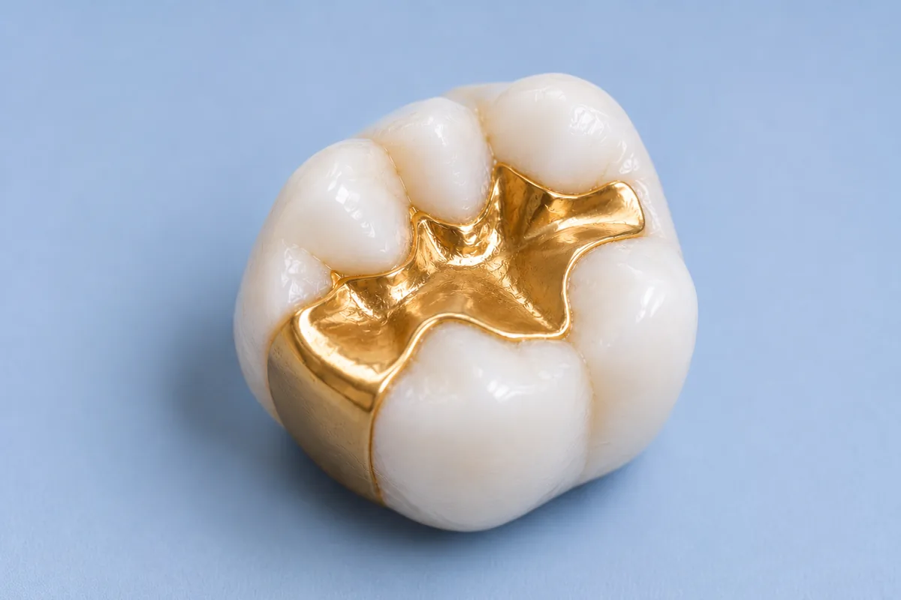
Gold. Sehr randdicht und langlebig, besonders bei starker Kaubelastung. Im hinteren Bereich kaum sichtbar. Illustration, keine Patientenaufnahme.
Und was ist mit alten Amalgamfüllungen?
Viele Patientinnen und Patienten tragen noch silberfarbene Amalgamfüllungen aus früheren Jahrzehnten. Neu gelegt wird Amalgam heute nicht mehr. Für vorhandene Füllungen gilt: Eine dichte, intakte Amalgamfüllung muss nicht allein deshalb ausgetauscht werden, weil sie alt ist. Anders sieht es aus, wenn der Rand undicht geworden ist, sich darunter erneut Karies gebildet hat oder die Füllung Risse zeigt. Dann tauschen wir sie aus und besprechen mit Ihnen, welches Material an dieser Stelle sinnvoll ist. Und wenn Sie sich eine zahnfarbene Lösung wünschen, auch ohne medizinische Notwendigkeit, sagen Sie es uns einfach. Wir schauen dann gemeinsam, was möglich ist.
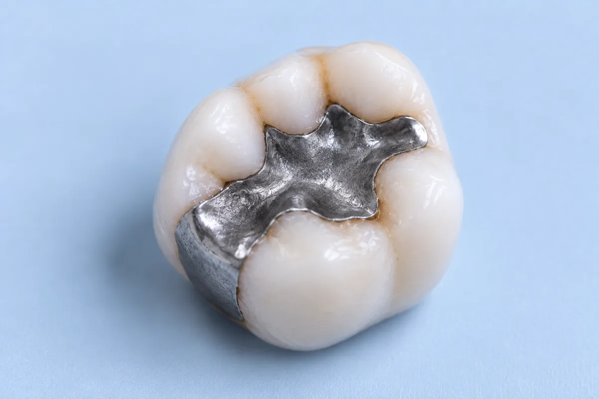
Amalgam. Silberfarbene Füllung aus früheren Jahrzehnten, im Seitenzahnbereich deutlich sichtbar. Illustration, keine Patientenaufnahme.
Noch Fragen? Unsere Antworten zum Thema Zahnerhaltung
Wie lange hält eine Füllung?
Das hängt vom Material, von der Größe der Füllung und von der Belastung ab. Kompositfüllungen halten bei guter Pflege viele Jahre, Keramik und Gold sind bei starker Kaubelastung in der Regel langlebiger. Entscheidend ist außerdem, wie sorgfältig die Zähne gepflegt werden und ob Sie regelmäßig zur Kontrolle kommen. Bei den Vorsorgeterminen schauen wir uns Ihre Füllungen mit an und sagen Ihnen rechtzeitig, wenn eine Erneuerung sinnvoll wird.
Ist eine Behandlung schmerzhaft?
In aller Regel nicht. Kleinere Füllungen lassen sich oft ohne Betäubung legen, bei größeren Defekten betäuben wir den Bereich zuverlässig. Sagen Sie uns einfach vorher Bescheid, wenn Sie unsicher sind oder schlechte Erfahrungen gemacht haben. Wir nehmen uns die Zeit, in Ruhe zu erklären, was wir tun, und richten uns nach Ihrem Tempo.
Zahlt die Krankenkasse die Behandlung?
Für Füllungen im Seitenzahnbereich übernehmen die gesetzlichen Krankenkassen eine Grundversorgung. Zahnfarbene Kompositfüllungen, Keramik-Inlays und Goldrestaurationen gehen in vielen Fällen darüber hinaus, sodass ein Eigenanteil entsteht. Wir besprechen die Kosten vorab mit Ihnen und erstellen Ihnen bei größeren Behandlungen einen schriftlichen Plan, damit Sie in Ruhe entscheiden können.
Wie viele Termine brauche ich?
Eine Kompositfüllung ist in einer Sitzung fertig. Keramik-Inlays fertigen wir mit CEREC digital in der Praxis, sodass in vielen Fällen ebenfalls ein Termin ausreicht. Goldrestaurationen werden im Labor hergestellt, hier sind zwei Termine nötig, dazwischen tragen Sie ein Provisorium.
Sieht man die Füllung später?
Komposit und Keramik sind zahnfarben und fügen sich gut ein, im Alltag fallen sie kaum auf. Gold ist sichtbar, allerdings verwenden wir es fast ausschließlich im hinteren Seitenzahnbereich, wo es beim Sprechen und Lachen praktisch nicht zu sehen ist. Wenn Ihnen die Optik besonders wichtig ist, sagen Sie es uns, dann berücksichtigen wir das bei der Materialwahl.
Was kann ich selbst tun, damit eine Füllung lange hält?
Am wichtigsten sind gründliche Zahnpflege und die Reinigung der Zahnzwischenräume, denn Karies entsteht besonders häufig am Rand einer Füllung. Regelmäßige professionelle Zahnreinigungen helfen zusätzlich. Und wenn Sie nachts knirschen, sprechen Sie uns darauf an, denn dauerhafte Überlastung ist einer der häufigsten Gründe dafür, dass Restaurationen vorzeitig ersetzt werden müssen.
Wie wir entscheiden
Die Wahl des Materials hängt von der Größe des Defekts ab, von der Lage des Zahnes, von Ihrer Kaubelastung und davon, was Ihnen ästhetisch wichtig ist. Wir zeigen Ihnen die Möglichkeiten, erklären die Unterschiede und sagen Ihnen offen, was wir empfehlen würden.
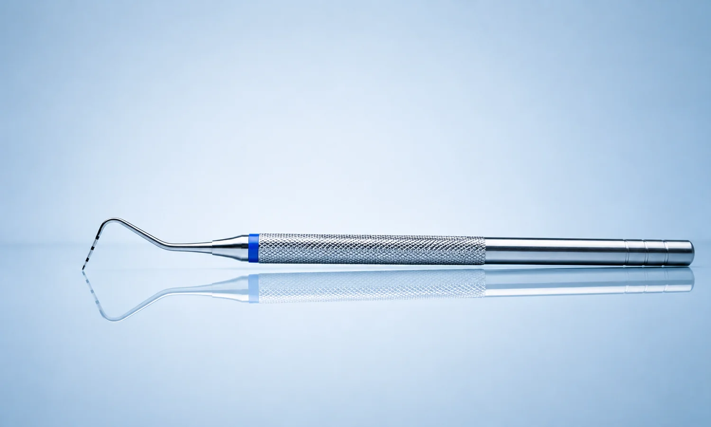
Gesundes Zahnfleisch, stabile Zähne
Gesundes Zahnfleisch ist die Grundlage für langfristige Zahngesundheit. Entzündungen des Zahnfleisches bleiben oft lange unbemerkt, können jedoch unbehandelt zum Rückgang des Zahnfleisches und zur Lockerung von Zähnen führen, feste und stabile Zähne sind jedoch wichtig für Unbeschwertheit in Ihrem Alltag.
Bei FRYDENT in Bonndorf widmen wir der Parodontologie besondere Aufmerksamkeit. Ziel ist es, Entzündungen frühzeitig zu erkennen und gezielt zu behandeln, sodass Sie langfristig Freude an Ihren stabilen Zähnen haben.
Parodontitis früh erkennen und gezielt behandeln
Parodontitis ist eine chronische Entzündung des Zahnhalteapparates, die sich schleichend entwickelt. Erste Anzeichen können Zahnfleischbluten, Schwellungen oder Mundgeruch sein, später auch Zahnlockerungen. Eine sorgfältige Parodontaldiagnostik bildet die Grundlage jeder Behandlung. Dazu gehören unter anderem Taschenmessungen sowie bei Bedarf mikrobiologische Tests, um Art und Ausmaß der Entzündung genau zu bestimmen.
Moderne Therapie mit schonenden Verfahren
Die Behandlung der Parodontitis zielt darauf ab, bakterielle Beläge unterhalb des Zahnfleischrandes gründlich zu entfernen. Hierfür führen wir eine Tiefenreinigung der Zahnfleischtaschen durch, angepasst an den Schweregrad der Erkrankung. Je nach Bedarf verwenden wir auch Verfahren wie Ultraschall- und Airflow-Technologie, die eine effektive und zugleich schonende Reinigung ermöglichen. Ergänzend nutzen wir einen Diodenlaser, um entzündetes Gewebe gezielt zu behandeln und die Heilung zu unterstützen.
Mehr zur Parodontitis-Behandlung finden Sie in unserem Infoportal. Zum Portal →Noch Fragen? Unsere Antworten zum Thema Parodontologie
Was ist Parodontitis?
Parodontitis ist eine chronische Entzündung des Zahnhalteapparates, also des Gewebes, das den Zahn im Kieferknochen verankert. Sie entsteht durch bakterielle Beläge und entwickelt sich häufig schleichend. Unbehandelt kann sie zum Abbau von Knochen und schließlich zum Zahnverlust führen. Eine frühzeitige Diagnose ist deshalb besonders wichtig.
Wie erkenne ich, ob ich Parodontitis habe?
Häufige Anzeichen sind Zahnfleischbluten, Rötungen, Schwellungen oder Mundgeruch. Auch zurückgehendes Zahnfleisch oder das Gefühl, dass sich Zähne lockerer anfühlen, können Hinweise sein. Da Parodontitis oft schmerzfrei verläuft, bleibt sie lange unbemerkt. Wenn Sie das Gefühl haben, dass sich Ihr Zahnfleisch verändert oder Ihnen Beschwerden bereitet, dann vereinbaren Sie einen Termin bei uns. Bei FRYDENT erkennen wir Veränderungen durch gezielte Untersuchungen und Messungen.
Wie stellen Sie eine Diagnose?
Zur Parodontaldiagnostik zählen unter anderem Taschenmessungen, bei denen die Tiefe der Zahnfleischtaschen bestimmt wird, wir bestimmen Ihren PSI (parodontaler Screening Index). Zusätzlich können mikrobiologische Tests eingesetzt werden, um die Art der Bakterien genauer zu analysieren. Diese Informationen helfen, die Therapie gezielt zu planen. So können wir die Behandlung individuell auf Ihre Situation abstimmen.
Wie läuft die Behandlung der Parodontitis ab?
Ziel der Behandlung ist es, bakterielle Beläge und Entzündungen unterhalb des Zahnfleischrandes zu entfernen. Dazu führen wir eine Tiefenreinigung der Zahnfleischtaschen durch. Je nach Befund kommen Ultraschall, Airflow oder ergänzend ein Diodenlaser zum Einsatz. Die Behandlung erfolgt schrittweise und angepasst an den jeweiligen Befund.
Ist die Parodontitis-Behandlung schmerzhaft?
Die Behandlung wird in der Regel gut vertragen. Bei Bedarf sorgen lokale Betäubungen dafür, dass die Reinigung möglichst angenehm verläuft. Moderne, schonende Verfahren wie Ultraschall und Airflow tragen zusätzlich zum Behandlungskomfort bei. Wir gehen immer behutsam vor und berücksichtigen Ihre individuelle Empfindlichkeit.
Warum ist Nachsorge bei Parodontitis wichtig?
Parodontitis ist eine chronische Erkrankung und erfordert eine regelmäßige Nachsorge. Durch Kontrollen und unterstützende Prophylaxe lassen sich Entzündungen frühzeitig erkennen und erneute Verschlechterungen vermeiden. Wir nehmen Sie in unser strukturiertes Nachsorgeprogramm auf (UPT) und unterstützen Sie auch mit einer Beratung zur passenden Mundhygiene zuhause. Gemeinsam sorgen wir dafür, dass das Behandlungsergebnis langfristig stabil bleibt.
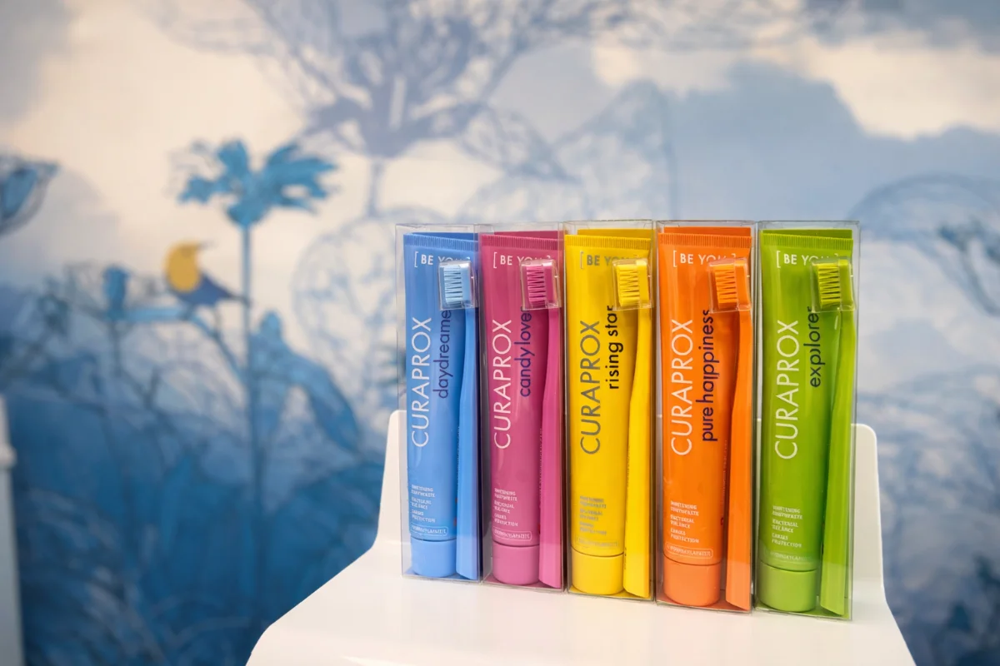
Für langfristige Zahngesundheit!
Regelmäßige Prophylaxe ist eine der wichtigsten Voraussetzungen für gesunde Zähne und gesundes Zahnfleisch, und zwar ein Leben lang. Bei FRYDENT unterstützen wir Sie und Ihre gesamte Familie mit professioneller Prophylaxe und Zahnreinigung dabei, Ihre Zähne möglichst lange gesund zu erhalten. So können wir viele Erkrankungen wie Karies oder Parodontitis frühzeitig erkennen und aufwendige Behandlungen vermeiden, für ein gepflegtes Lächeln und ein gutes Gefühl im Alltag!
Individuelle Prophylaxe für jedes Alter
Jede Zahnsituation ist anders. Deshalb stimmen wir prophylaktische Maßnahmen bei FRYDENT individuell auf Ihre Bedürfnisse ab. Ob Kinder, Erwachsene oder Seniorinnen und Senioren: Bei uns zählen eine schonende Vorgehensweise, die persönliche Beratung zu Ihrer Mundhygiene und unsere besondere Atmosphäre mit Humor und guter Laune. So wird Prophylaxe zu einem festen, entspannten Bestandteil Ihrer Zahnpflege.
Professionelle Zahnreinigung: wirksam & schonend
Die professionelle Zahnreinigung, kurz PZR, ist ein wichtiger Bestandteil der Prophylaxe und der Nachsorge bei Parodontitis. Dabei entfernen wir gründlich Beläge und Ablagerungen, die mit der täglichen Zahnpflege nicht vollständig erreicht werden. Zum Einsatz kommen moderne Verfahren wie Airflow, um Zähne und Zahnzwischenräume effektiv zu reinigen. Das Ergebnis: glatte, saubere Zähne und ein spürbar frisches Mundgefühl.
Mehr dazu finden Sie in unserem Infoportal, mit ausführlichen Infos zur professionellen Zahnreinigung. Zum Portal →Noch Fragen? Unsere Antworten zum Thema Prophylaxe
Viele Patientinnen und Patienten haben ähnliche Fragen rund um Prophylaxe und professionelle Zahnreinigung. Wie oft Vorsorge sinnvoll ist, was dabei passiert und für wen sie besonders wichtig ist, klären wir hier ganz übersichtlich. So können Sie sich in Ruhe informieren und gut vorbereitet in Ihren Termin bei FRYDENT kommen.
Wie oft sollte ich zur professionellen Zahnreinigung kommen?
In der Regel empfehlen wir ein bis zwei professionelle Zahnreinigungen pro Jahr. Bei erhöhtem Karies- oder Parodontitisrisiko, bei Zahnfleischproblemen oder Implantaten kann ein kürzerer Abstand sinnvoll sein. Gerne besprechen wir mit Ihnen, welcher Rhythmus für Ihre Zahngesundheit am besten passt.
Für wen ist regelmäßige Prophylaxe besonders wichtig?
Regelmäßige Prophylaxe ist für alle sinnvoll, besonders aber, wenn Zähne oder Zahnfleisch bereits empfindlich reagieren. Wer zu Karies neigt, häufig Beläge hat oder erste Zahnfleischprobleme bemerkt, profitiert meist deutlich von festen Prophylaxe-Terminen. Auch bei Implantaten, Kronen oder Brücken hilft eine gute Vorsorge, die Versorgung langfristig zu schützen. Für Kinder und Jugendliche ist Prophylaxe zudem wichtig, um gesunde Gewohnheiten früh zu festigen.
Ist die professionelle Zahnreinigung schmerzhaft?
Die professionelle Zahnreinigung ist in der Regel gut auszuhalten und wird von vielen als deutlich angenehmer erlebt als erwartet. Manchmal kann es an empfindlichen Stellen kurzzeitig unangenehm sein, zum Beispiel bei freiliegenden Zahnhälsen oder entzündetem Zahnfleisch. Wir arbeiten bei FRYDENT schonend, nehmen uns Zeit und passen die Behandlung an Ihre Empfindlichkeit an. Wenn Sie unsicher sind, sagen Sie es einfach, dann gehen wir besonders behutsam vor.
Welche Vorteile hat regelmäßige Vorsorge für Zähne und Zahnfleisch?
Regelmäßige Prophylaxe hilft, Beläge und harte Ablagerungen zu entfernen, die sich im Alltag trotz guter Zahnpflege festsetzen können. Das senkt das Risiko für Karies, Zahnfleischentzündungen und Parodontitis. Zusätzlich erkennen wir Veränderungen frühzeitig und können rechtzeitig gegensteuern, bevor es aufwendiger wird. Viele Patientinnen und Patienten schätzen außerdem das saubere Gefühl und die glatteren Zahnoberflächen nach der Reinigung.
Was ist der Unterschied zwischen Prophylaxe und professioneller Zahnreinigung?
Prophylaxe ist der übergeordnete Begriff für Vorsorge, dazu gehören Beratung, Kontrolle, individuelle Empfehlungen und bei Bedarf verschiedene Maßnahmen. Die professionelle Zahnreinigung (PZR) ist ein wichtiger Bestandteil davon und meint konkret die gründliche Reinigung der Zähne und Zwischenräume. Bei FRYDENT betrachten wir immer die gesamte Situation: Wie steht es um Zahnfleisch, Beläge, Pflegegewohnheiten und mögliche Risikofaktoren? Daraus ergibt sich, was für Sie sinnvoll ist. Die PZR ist dabei häufig ein zentraler Baustein.
Welche Rolle spielt Airflow bei der Zahnreinigung?
Airflow ist ein schonendes Verfahren, mit dem weiche Beläge und Verfärbungen besonders effektiv entfernt werden können. Auch an Stellen, die sonst schwer erreichbar sind. Viele empfinden Airflow als angenehm, weil es häufig weniger „kratzend" wirkt als klassische Methoden. Bei FRYDENT setzen wir Airflow gezielt dort ein, wo es sinnvoll ist, zum Beispiel in den Zahnzwischenräumen oder bei Belägen entlang des Zahnfleischrands.
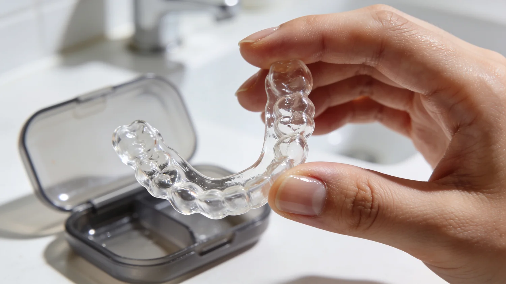
Kiefer und Zähne? Im Gleichgewicht.
Beschwerden im Kiefergelenk, Verspannungen, Kopfschmerzen oder nächtliches Zähneknirschen haben oft eine gemeinsame Ursache: eine gestörte Funktion des Kausystems. Zähne, Kiefergelenke und Muskulatur müssen harmonisch zusammenarbeiten, damit sie langfristig gesund bleiben. Bei FRYDENT betrachten wir Funktion ganzheitlich. Ziel ist es, Ursachen zu erkennen, ganzkörperliche Beschwerden zu lindern und Zähne sowie Kiefer dauerhaft zu entlasten.
CMD? Ursachen gemeinsam angehen
Funktionelle Störungen des Kausystems werden häufig unter dem Begriff CMD (Craniomandibuläre Dysfunktion) zusammengefasst. Sie können sich sehr unterschiedlich äußern, etwa durch Kieferknacken, Schmerzen beim Kauen, Nacken- oder Schulterverspannungen. Eine sorgfältige Funktionsanalyse ist entscheidend, um Zusammenhänge zu erkennen. Wir nehmen uns Zeit für eine genaue Untersuchung und besprechen verständlich, welche Behandlung zu Ihnen und Ihren Beschwerden passt.
Mehr zum Thema CMD finden Sie in unserem Infoportal. Zum Portal →Zahnschienen zur Entlastung und Stabilisierung
Ein zentraler Bestandteil der funktionellen Therapie sind individuell angepasste Zahnschienen. Sie helfen dabei, Fehlbelastungen auszugleichen, Muskulatur zu entspannen und Zähne vor übermäßigem Abrieb zu schützen. Zahnschienen kommen unter anderem bei nächtlichem Zähneknirschen oder Pressen zum Einsatz. Jede Schiene wird bei FRYDENT individuell gefertigt und regelmäßig kontrolliert, um eine optimale Wirkung und einen angenehmen Tragekomfort zu gewährleisten.
Noch Fragen? Unsere Antworten zum Thema Funktion & Zahnschienen
Was ist CMD?
CMD steht für Craniomandibuläre Dysfunktion und bezeichnet Funktionsstörungen im Zusammenspiel von Zähnen, Kiefergelenken und Muskulatur. Sie kann sich durch Schmerzen, Verspannungen oder Geräusche im Kiefer äußern. Oft bestehen Zusammenhänge mit Stress oder Fehlbelastungen. Patient:innen sind häufig von diffusen Beschwerden betroffen, bringen diese aber nicht mit dem Kiefer in Zusammenhang. Eine gezielte Diagnostik hilft, die Ursache einzugrenzen.
Welche Beschwerden können auf eine Funktionsstörung hinweisen?
Typische Anzeichen sind Kieferknacken, Schmerzen beim Öffnen oder Schließen des Mundes sowie Kopf-, Nacken- oder Schulterschmerzen. Auch Zähneknirschen oder ein Gefühl von Verspannung im Kieferbereich können Hinweise sein. Die Symptome sind oft unspezifisch und werden nicht sofort mit den Zähnen in Verbindung gebracht. Eine Untersuchung kann hier Klarheit schaffen.
Wann ist eine Zahnschiene sinnvoll?
Eine Zahnschiene ist sinnvoll, wenn Zähne oder Kiefer übermäßig belastet werden, zum Beispiel durch Knirschen oder Pressen in der Nacht. Sie kann helfen, Beschwerden zu lindern und weiteren Schäden vorzubeugen. Auch bei funktionellen Störungen des Kiefers kommt sie häufig zum Einsatz. Ob eine Schiene für Sie geeignet ist, klären wir individuell.
Wie wirkt eine Zahnschiene?
Zahnschienen entlasten die Kiefergelenke und die Muskulatur, indem sie Fehlkontakte ausgleichen. Gleichzeitig schützen sie die Zähne vor Abrieb und Überlastung. Viele Patientinnen und Patienten berichten über eine spürbare Entspannung, insbesondere nachts. Die Wirkung hängt von der individuellen Anpassung und regelmäßigen Kontrolle ab.
Muss eine Zahnschiene dauerhaft getragen werden?
Ob und wie lange eine Zahnschiene getragen werden sollte, hängt von der Ursache der Beschwerden ab. In manchen Fällen ist sie eine langfristige Begleitung, in anderen nur für eine bestimmte Phase notwendig. Regelmäßige Kontrollen sind wichtig, um die Therapie anzupassen. Wir besprechen das Vorgehen stets individuell.
Wird eine Zahnschiene von der Krankenkasse übernommen?
Die Kostenübernahme hängt von der Art der Schiene und der jeweiligen Krankenkasse ab. Gesetzliche Kassen übernehmen in bestimmten Fällen eine Grundversorgung. Individuelle Schienen oder spezielle Therapiekonzepte können zusätzliche Kosten verursachen. Selbstverständlich informieren wir Sie transparent über mögliche Kosten und Alternativen.
Zähne sanft an ihren Platz.
Aligner sind transparente Schienen, die Zähne Schritt für Schritt in eine neue Position bewegen. Sie sind herausnehmbar, im Alltag kaum sichtbar und für viele Erwachsene die angenehmere Alternative zur festen Spange.
Erst planen, dann entscheiden
Am Anfang steht ein digitaler Scan Ihrer Zähne oder ein Abdruck. Auf dieser Grundlage erstellt unser Partnerlabor MDH eine detaillierte Planung: Sie sehen die Ausgangssituation und das angestrebte Ergebnis nebeneinander, dazu den vollständigen Behandlungsablauf. Erst danach entscheiden Sie, ob Sie die Behandlung beginnen möchten. Es gibt an dieser Stelle keinen Druck und keine Vorleistung, die Sie zu etwas verpflichtet.
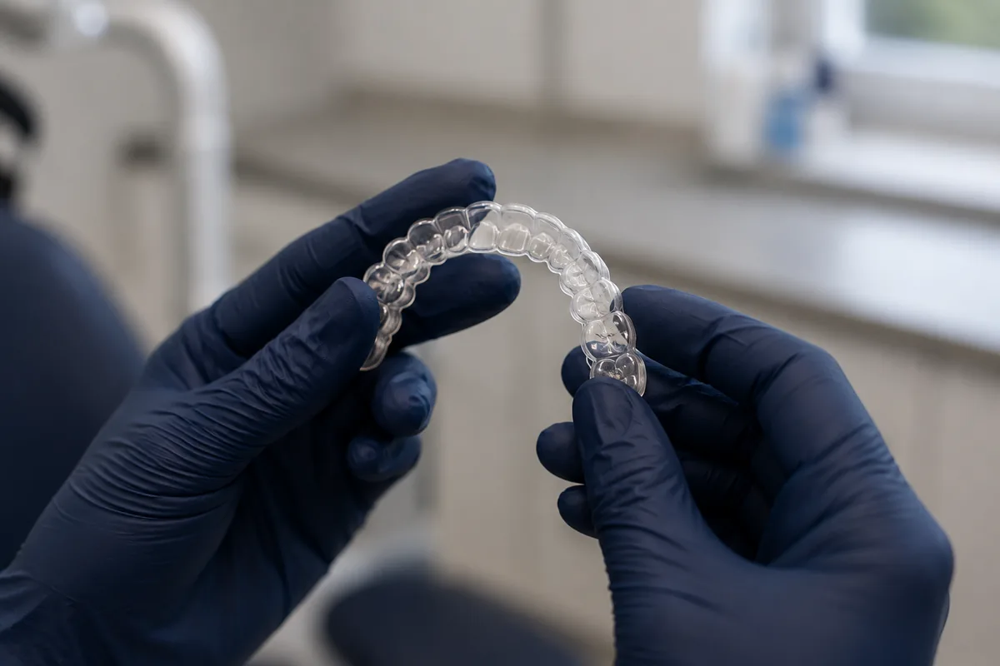
Aligner aus dem Labor. Jede Schiene wird nach der digitalen Planung individuell für Sie gefertigt.
Wobei Aligner gut helfen
Besonders gute Ergebnisse erreichen wir beim Schließen von Lücken zwischen den Zähnen, etwa bei einem Diastema oder bei größeren Zwischenräumen. Auch einzelne Zähne, die aus der Reihe stehen, lassen sich meist gut korrigieren. Bei Erwachsenen mit einer Lücke nach einem verlorenen Zahn ist manchmal sogar der Verzicht auf Implantat oder Brücke möglich, weil sich die verbliebenen Zähne gleichmäßig verteilen und die Lücke schließen lässt.
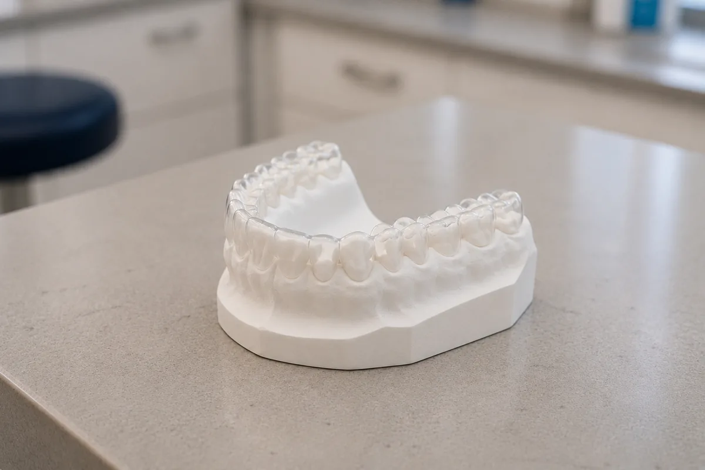
Vom Modell zur Schiene. Auf Grundlage von Scan oder Abdruck entsteht die Planung, Schritt für Schritt.
Wo die Grenzen liegen
Ausgeprägte Kieferfehlstellungen gehören nicht in die Alignertherapie. Solche Fälle besprechen wir mit unserem kieferorthopädischen Kollegen und überweisen weiter, wenn das der bessere Weg ist. Jede Planung wird vorab mit dem Labor abgestimmt, damit von Anfang an klar ist, was realistisch erreichbar ist.
Alle zwei Wochen sehen wir uns
Aligner wirken nur, wenn sie getragen werden, in der Regel rund 22 Stunden am Tag. Diese Mitarbeit ist die entscheidende Voraussetzung für das Ergebnis. Wir begleiten Sie eng: Alle zwei Wochen prüfen wir den Fortschritt und sprechen darüber, wie Sie mit den Schienen zurechtkommen. Wenn etwas nicht mehr passt, lassen wir neue Schienen anfertigen. Nach Abschluss sichern wir das Ergebnis, damit die Zähne dort bleiben, wo sie hingehören.
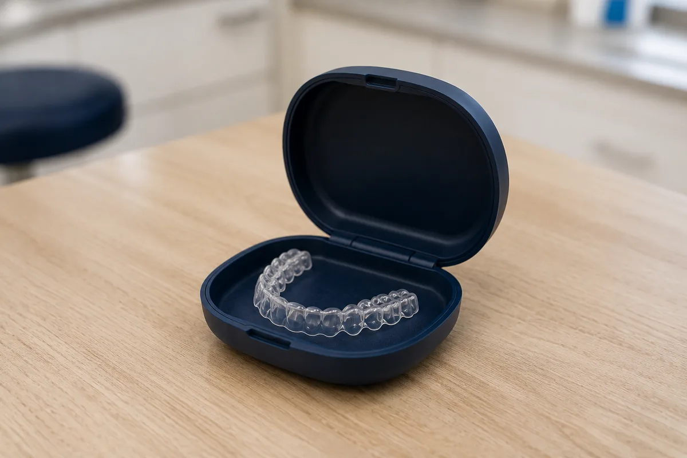
Für den Alltag gemacht. Herausnehmbar, unauffällig und einfach zu reinigen.
Wir behandeln Jugendliche und Erwachsene, die wissen, was sie möchten, und bereit sind, den Weg mitzugehen.
Mehr zur Alignertherapie finden Sie in unserem Infoportal. Zum Portal →Noch Fragen? Unsere Antworten zum Thema Aligner
Wie lange dauert eine Alignerbehandlung?
Das hängt stark davon ab, wie weit die Zähne bewegt werden müssen. Kleinere Korrekturen sind manchmal in wenigen Monaten abgeschlossen, umfangreichere Behandlungen dauern deutlich länger. Nach der Planung mit unserem Partnerlabor können wir Ihnen eine realistische Einschätzung geben, bevor Sie sich entscheiden.
Wie viele Stunden am Tag muss ich die Schienen tragen?
In der Regel rund 22 Stunden täglich, herausgenommen werden sie zum Essen und zum Zähneputzen. Diese Tragedisziplin ist die entscheidende Voraussetzung dafür, dass die geplante Bewegung tatsächlich stattfindet. Wer die Schienen häufig weglässt, verzögert die Behandlung.
Sieht man die Schienen?
Aligner sind transparent und liegen eng an, im Alltag fallen sie den meisten Menschen kaum auf. Aus nächster Nähe sind sie erkennbar, aber deutlich unauffälliger als eine feste Spange. Genau das ist für viele Erwachsene der ausschlaggebende Punkt.
Für wen sind Aligner nicht geeignet?
Ausgeprägte Kieferfehlstellungen lassen sich mit Schienen nicht behandeln, solche Fälle gehören in kieferorthopädische Hände. Auch eine unbehandelte Parodontitis oder umfangreiche Karies müssen zuerst versorgt werden. Und die Behandlung setzt voraus, dass Sie die Schienen zuverlässig tragen wollen. Wir sagen Ihnen offen, wenn wir Aligner in Ihrer Situation nicht für den richtigen Weg halten.
Was passiert, wenn eine Schiene nicht mehr richtig passt?
Sagen Sie uns rechtzeitig Bescheid, am besten beim nächsten Kontrolltermin. Manchmal genügt es, eine Schiene länger zu tragen, in anderen Fällen lassen wir neue Schienen anfertigen. Solche Anpassungen sind Teil einer Alignerbehandlung und kein Grund zur Sorge.
Bleiben die Zähne danach an ihrem Platz?
Zähne haben die Neigung, sich langsam wieder zu bewegen. Deshalb sichern wir das Ergebnis nach Abschluss der Behandlung mit einem fest eingesetzten Retainer, einem dünnen Draht, den wir auf der Innenseite der Zähne befestigen. Er ist von außen nicht sichtbar und stört im Alltag nicht. Wie das bei Ihnen genau aussieht, besprechen wir rechtzeitig vor dem Ende der Behandlung.
Zeigen Sie Ihr natürlich schönes Lächeln.
Ein schönes Lächeln wirkt offen, sympathisch und selbstbewusst, vor allem dann, wenn es natürlich aussieht. Ästhetische Zahnmedizin bedeutet für uns nicht Perfektion, sondern ein Ergebnis, das genau zu Ihnen passt. Wir verbinden zahnmedizinische Erfahrung mit einem sicheren Blick für Ästhetik. Wir setzen auf dezente Verbesserungen, die Funktion und Optik gleichermaßen berücksichtigen, statt auf ein künstliches Standardlächeln.
Ästhetik beginnt mit Feingefühl
Oft sind es kleine Veränderungen, die einen großen Unterschied machen. Leichte Verfärbungen, unregelmäßige Kanten oder minimale Fehlstellungen können das Gesamtbild stören, ohne dass eine umfangreiche Behandlung notwendig ist. Wir nehmen uns Zeit, genau hinzuschauen, zuzuhören und gemeinsam zu klären, was Sie sich wünschen. Auf dieser Basis entwickeln wir individuelle Lösungen, zurückhaltend, zahnerhaltend und medizinisch sinnvoll.
So sorgen wir für natürliche Ergebnisse
In der ästhetischen Zahnmedizin setzen wir auf bewährte und schonende Verfahren. Dazu gehören unter anderem Bleaching zur schonenden Aufhellung der Zähne, Veneers für Form- und Farbkorrekturen sowie Aligner-Therapien zur unauffälligen Korrektur leichter Zahnfehlstellungen. Ergänzend führen wir Feinkorrekturen durch Konturierung und Politur durch, um das natürliche Erscheinungsbild der Zähne zu optimieren. Alle Maßnahmen erfolgen mit Blick auf Funktion, Langlebigkeit und ein harmonisches Gesamtbild.
Mehr zu Bleaching und Veneers finden Sie in unserem Infoportal. Zum Portal →Noch Fragen? Unsere Antworten zur ästhetischen Zahnmedizin
Für wen ist ästhetische Zahnmedizin sinnvoll?
Ästhetische Zahnmedizin richtet sich an alle, die sich ein harmonischeres Zahnbild wünschen. Oft geht es dabei um kleine Korrekturen, nicht um große Veränderungen. Voraussetzung ist eine gesunde Zahn- und Zahnfleischsituation. Ob und welche Behandlung sinnvoll ist, klären wir individuell im Gespräch.
Was ist der Unterschied zwischen Bleaching und Veneers?
Beim Bleaching werden Zähne schonend aufgehellt, ohne ihre Substanz zu verändern. Veneers sind hauchdünne Verblendschalen, die dauerhaft auf die Zahnoberfläche aufgebracht werden und sowohl Farbe als auch Form beeinflussen. Welche Methode geeignet ist, hängt von der Ausgangssituation und dem gewünschten Ergebnis ab. Wir beraten Sie dazu transparent und verständlich.
Sind Aligner eine Alternative zu festen Zahnspangen?
Aligner sind transparente Schienen, mit denen sich leichte bis mittlere Zahnfehlstellungen korrigieren lassen. Sie sind unauffällig und lassen sich zum Essen oder zur Zahnpflege herausnehmen. Ob eine Aligner-Therapie für Sie geeignet ist, hängt von der Art der Fehlstellung ab. Das prüfen wir im Rahmen einer sorgfältigen Diagnostik.
Wie natürlich wirken ästhetische Behandlungen?
Unser Anspruch ist ein Ergebnis, das nicht „gemacht" aussieht. Deshalb arbeiten wir mit viel Feingefühl und stimmen jede Maßnahme individuell ab. Ziel ist es, die natürliche Zahnform und -farbe zu unterstützen, nicht zu verändern. Gerade Zurückhaltung ist hier oft der Schlüssel zu einem überzeugenden Ergebnis.
Sind ästhetische Behandlungen schädlich für die Zähne?
Bei fachgerechter Durchführung sind ästhetische Behandlungen in der Regel gut verträglich. Wir legen großen Wert auf zahnerhaltende Verfahren und schonende Techniken. Vor jeder Behandlung prüfen wir sorgfältig, ob sie medizinisch sinnvoll ist. Ihre Zahngesundheit steht dabei immer an erster Stelle.
Wie lange halten ästhetische Ergebnisse?
Die Haltbarkeit hängt von der gewählten Behandlung, der Mundhygiene und regelmäßigen Kontrollen ab. Bleaching-Ergebnisse können je nach Lebensgewohnheiten variieren, während Veneers oder Aligner-Ergebnisse langfristig stabil sein können. Mit guter Pflege und regelmäßiger Prophylaxe lassen sich ästhetische Ergebnisse lange erhalten. Wir begleiten Sie dabei auch nach der Behandlung.
Fragen zu einer Behandlung? Wir beraten Sie gerne persönlich.
07703 284Sprechzeiten
Außerhalb der Sprechzeiten: zahnärztlicher Notdienst 01805 911-620
Kontakt
Sie möchten einen Termin vereinbaren oder uns etwas mitteilen? Nutzen Sie ganz einfach unser Kontaktformular, oder noch einfacher: buchen Sie direkt online.